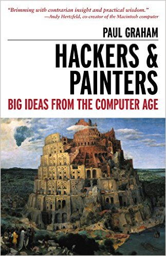

The readings for this week are:
In these essays, Paul Graham paints1 a portrait of the modern hacker, who though "unruly" is a "maker" that "learn[s] ... by doing" and is "the essence of Americanness".
For this upcoming week, you are to consider the following questions as you perform the readings and participate in class:
How does Paul Graham's vision of a hacker compare and contrast with the description provided by Steven Levy in Hackers: Heroes of the Computer Revolution?
What passages or arguments in Paul Graham's essays regarding hackers did you find compelling or interesting?
What passages or arguments in Paul Graham's essays regarding hackers did you find disagreeable or misguided?
What is your personal reaction to Paul Graham's modern version of the hacker: Do you identify with the type of person Paul Graham describes or do you find it uninteresting or perhaps offputting?
Note, you should not simply list the questions and answer each one directly. Instead, the questions are there to help you brainstorm about the question:
Is Paul Graham's version of a hacker compatible with Steven Levy's description? Do his arguments for and description of the modern hacker change your mind about what it means to be a hacker or the desirability of being one?
See what I did :P ↩